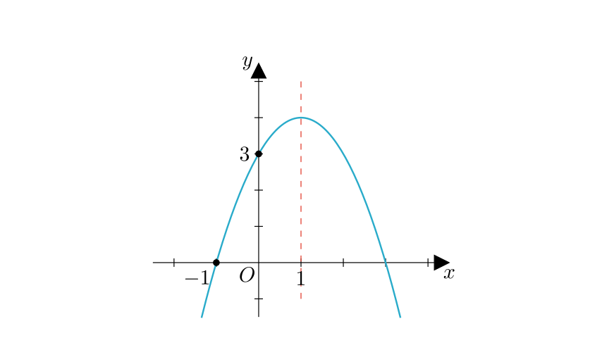
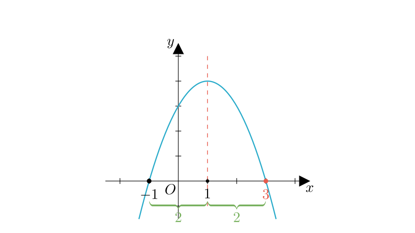
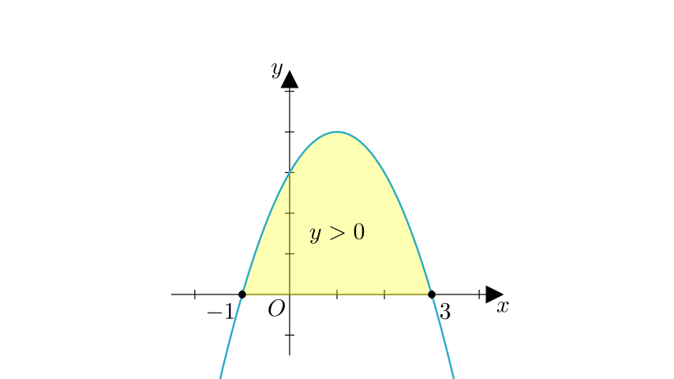
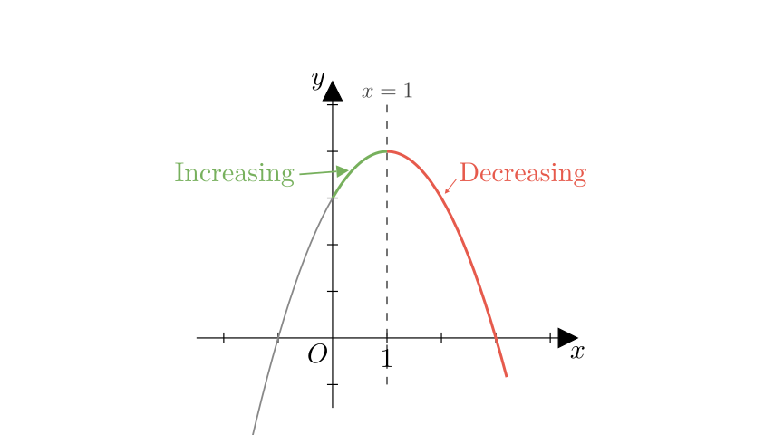

Problem Statement: As shown in the figure, the axis of symmetry of the parabola $y = ax^2 + bx + c$ ($a \neq 0$) is the line $x = 1$. One intersection point with the x-axis is $(-1, 0)$. Part of its graph is shown. Consider the following conclusions:
① $4ac < b^2$ ② $3a + c > 0$ ③ When $x > 0$, $y$ decreases as $x$ increases. ④ When $y > 0$, the range of $x$ is $-1 < x < 3$. ⑤ The two roots of the equation $ax^2 + bx + c = 0$ are $x_1 = -1$ and $x_2 = 3$.
Determine the number of correct conclusions among these options.
Solution Approach: We will analyze the properties of the quadratic function based on the graph (opening direction, axis of symmetry, intersection points) to evaluate the coefficients $a, b, c$ and verify each of the five statements step-by-step.

Step 1: Analyzing the Coefficients and Discriminant (Conclusion ①)
First, let's observe the basic properties of the graph: * The parabola opens downwards, which implies $a < 0$. * The graph intersects the x-axis at two distinct points (one is given at $x = -1$, and by symmetry, there must be another on the positive side).
Evaluating Conclusion ①: $4ac < b^2$ This inequality can be rearranged as $b^2 - 4ac > 0$. The expression $b^2 - 4ac$ is the discriminant ($\Delta$) of the quadratic equation. * If $\Delta > 0$, the parabola has two distinct x-intercepts. * Since the graph clearly crosses the x-axis at two distinct points, we know that $b^2 - 4ac > 0$, which means $b^2 > 4ac$ or $4ac < b^2$.
Therefore, Conclusion ① is Correct.

Step 2: Finding the Roots and Range (Conclusions ④ and ⑤)
Evaluating Conclusion ⑤: Roots of $ax^2 + bx + c = 0$ * We are given the axis of symmetry is $x = 1$. * One root is $x_1 = -1$. * The distance from the root $x_1 = -1$ to the axis $x = 1$ is $|1 - (-1)| = 2$. * Due to symmetry, the other root $x_2$ must be 2 units to the right of the axis: $x_2 = 1 + 2 = 3$. * So, the roots are indeed $x_1 = -1$ and $x_2 = 3$. Therefore, Conclusion ⑤ is Correct.
Evaluating Conclusion ④: Range of $x$ when $y > 0$ * We are looking for the part of the graph that is above the x-axis ($y > 0$). * Since the parabola opens downwards ($a < 0$), the function values are positive between the two roots. * The roots are $-1$ and $3$. * Thus, $y > 0$ when $-1 < x < 3$. Therefore, Conclusion ④ is Correct.

Step 3: Analyzing Monotonicity (Conclusion ③)
Evaluating Conclusion ③: When $x > 0$, $y$ decreases as $x$ increases. * The axis of symmetry is the line $x = 1$. * For a parabola opening downwards: * To the left of the axis ($x < 1$), $y$ increases as $x$ increases. * To the right of the axis ($x > 1$), $y$ decreases as $x$ increases. * The statement considers the interval $x > 0$. * This interval includes the range $0 < x < 1$, where the function is actually increasing. * It only starts decreasing when $x > 1$.
Because the function is not decreasing for the entire interval $x > 0$, Conclusion ③ is Incorrect.

Step 4: Algebraic Verification (Conclusion ②)
Evaluating Conclusion ②: $3a + c > 0$ Let's use the relationships we have established. 1. Axis of symmetry formula: $x = -\frac{b}{2a} = 1 \implies b = -2a$. 2. Point on graph: The graph passes through $(-1, 0)$. We can substitute $x = -1$ and $y = 0$ into the equation: $$a(-1)^2 + b(-1) + c = 0$$ $$a - b + c = 0$$
Now, substitute $b = -2a$ into this equation: $$a - (-2a) + c = 0$$ $$a + 2a + c = 0$$ $$3a + c = 0$$
The conclusion states $3a + c > 0$. However, we proved that $3a + c$ is exactly equal to 0. Therefore, Conclusion ② is Incorrect.
Final Count: * ① Correct ($4ac < b^2$) * ② Incorrect ($3a + c = 0$) * ③ Incorrect (Increases on $0 < x < 1$) * ④ Correct ($-1 < x < 3$) * ⑤ Correct (Roots are -1, 3)
There are 3 correct conclusions (①, ④, ⑤).
Final Answer: The correct choice is B (3个).